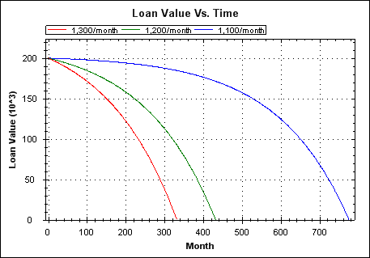

Mortgage Maths
Colin Green, 2009
All examples are based on an initial loan value of 200,000 (the maths is independent of currency).
The remaining value of a loan throughout its life for three different monthly repayments. Interest rate is 6.5%.

The relationship between term duration and repayment amount. Small increases in repayment can reduce term length by a lot.
Total interest paid at end of mortgage life (on top of the 200k loan amount itself), versus term length. Plots shown for interest rates of 6.5, 10 and 15%. On a standard 25(UK)-30(US) year mortgage you're probably paying back at least the loan amount again in interest.
Mortgaging to the extremes of your ability to repay means that:
- You're signing a lot more of your earned wealth over to the bank than if you took on a more manageable loan. Interest rates matter but are ultimately unknowable for the full life of a 25-30 year mortgage.
- You're closer to the point of loan default in the event of a drop in earnings and/or a rise in interest rates.
Derivation:
Page 1
Page 2
 Copyright 2009, 2010, 2011 Colin Green.
Copyright 2009, 2010, 2011 Colin Green.This article is licensed under a Creative Commons Attribution 3.0 License